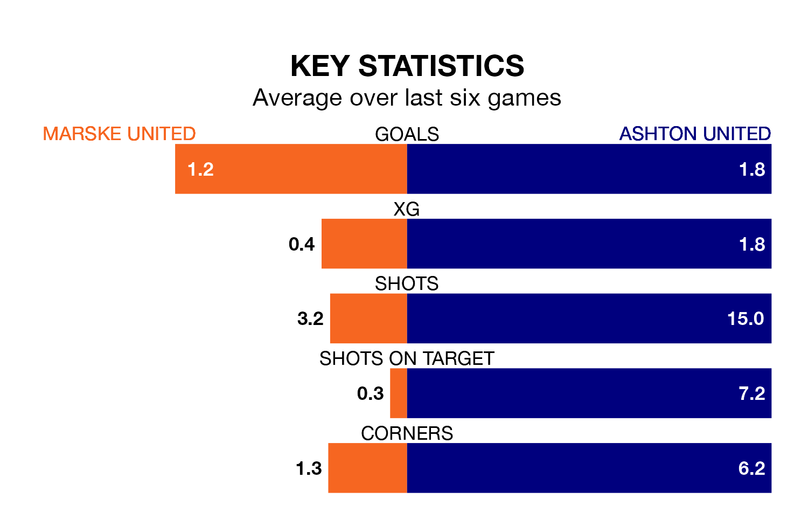

Mid-season relegation candidates Marske United face a challenge against high-flying Ashton United at the GER Stadium on Saturday.
Marske United are 20th in the Northern Premier League table, and have picked up five wins and no draws in their 19 games to date.
Ashton, meanwhile, are third in the standings with 38 points, having won 11 and drawn five of their first 21 matches, and are seven points behind table-toppers Radcliffe Borough.
With 26 goals in 19 games so far this season, Marske are scoring at below the league average rate with 1.4 goals per game. And they are conceding more than average, letting in 49 goals at a rate of 2.6 per game.
Ashton, meanwhile, are above average scorers, with 1.8 goals per game, compared to a league average of 1.7. They have conceded 1.7 goals per game.
Marske United are in disappointing form in Northern Premier League, with two wins and four losses from their last six games.
With three wins and two draws over that period, Ashton United's form is better – they have taken 11 points from 18, compared to the hosts' six.
Marske's last match was on December 16, a 3-1 loss against Ilkeston Town.
Ashton drew 2-2 with Workington last time out, also on December 16.
Updated: 15:16, 21/12/23